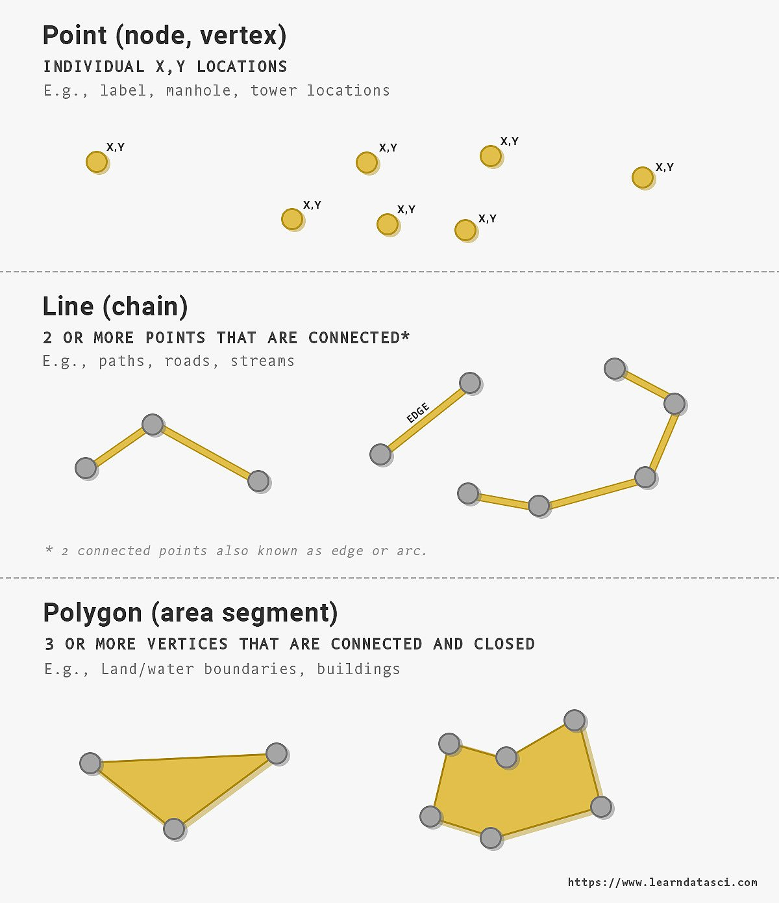

Intro to GIS
File types
Vector and raster data are two fundamental types of spatial data used in Geographic Information Systems (GIS). Vector data represents geographical features as distinct shapes using points, lines, and polygons, each of which can carry detailed attribute information, making it ideal for precise mapping applications like boundaries, roads, and infrastructure networks. It excels in accuracy and detail for discrete data. In contrast, raster data consists of a grid of pixels, each holding a value, effectively representing continuous data. This format is well-suited for environmental analysis, land cover studies, and satellite imagery, as it captures variations over a wide area, such as elevation, temperature, or vegetation. While vector data is preferred for its precision in depicting specific geographic entities and managing related data, raster data is favored for its ability to represent complex, continuous phenomena over large spatial scales.
Vector
Types
Vector data types are primarily categorized into Points, Linestrings, and Polygons, each with distinct characteristics and uses. Additionally, there are multi-geometry versions of these types, such as MultiPoints, MultiLinestrings, and MultiPolygons, which offer more complex feature groupings.
- Points: Points are used to represent discrete locations on the earth’s surface. Each point is defined by a pair of coordinates (e.g. latitude and longitude, or an easting and northing) and can represent features such as the location of a tree or a landmark. They can have attributes further describing characteristics of interest, such as tree species or landmark name.
- Linestring: Lines connect a series of points to describe linear features such as roads or rivers. Linestring geometries inherently have length and may include attributes such as road type or river name.
- Polygons: Polygons are closed shapes used to represent areas such as city boundaries or land parcels. Polygon geometries inherently have an area and perimeter and may have attributes such as population counts or land use types.

- Multi-Geometry Versions: Multi geometries provide a way to associated a grouping of Features which can share the same feature attributes.
- MultiPoint: For example, a grouping of trees.
- MultiLinestring: For example, a grouping of related segments describing a long-distance hiking trail.
- MultiPolygon: For example, a grouping of buildings which together represent a larger entity such as a hospital or university.
Formats
Esri Shapefile
Shapefile is a prevalent geospatial file type in GIS software, requiring three mandatory files:
SHP(feature geometry)SHX(shape index position)DBF(attribute data)- Shapefiles often also include optional files such as
PRJ(coordinate reference system).
GeoPackage
GeoPackage provides a modern and simpler alternative to shapefiles and is rapidly gaining acceptance. It can store multiple data layers and it’s use of SQLite means that you can use SQL query data from the file.
GeoJSON
GeoJSON encodes geographic data structures using JSON, a format commonly used for web development.
Reference: https://gisgeography.com/gis-formats/
Raster
Rasters contain a grid of pixels, where the value used for each grid cell can represent a characteristic such as temperature or landcover. Geographic rasters typically include Geospatial information necessary to correctly project and locate the information in GIS software.

Formats
ASCII Grid
ASCII Grid files (ASC) store raster data as text in a grid format. Each cell in the grid is represented by a numeric value corresponding to the geographic attribute being mapped, such as elevation. ASCII Grid files include a header specifying metadata like cell size, number of rows and columns, and coordinates of the lower left corner. The format is simple and can be generated or edited with a text editor, and may use space, comma, or tab-delimiters.
GeoTIFF
GeoTIFF is widely becoming the defacto raster format in GIS. It embeds coordinate reference system information within a TIFF (Tagged Image File Format) file. GeoTIFFs are commonly used for storing satellite imagery, elevation data, and land surface temperatures.
Reference: https://gisgeography.com/gis-formats/
Coordinate Reference Systems
Geographic data is intrinsically tied to the earth’s surface and is represented using coordinates within defined Coordinate Reference Systems (CRS). Broadly, these systems fall into two categories: Geographic Coordinate Systems and Projected Coordinate Systems.
Geographic CRSs use a spherical surface to define locations on the earth’s surface. They are based on degrees in latitude and longitude and are most commonly referenced to the WGS84 datum. While they accurately represent the earth’s curved surface and preserve the true shape and angular relationships of features, distances and areas may not be as accurate, especially over larger distances.
Projected CRSs translate the earth’s three-dimensional surface onto a two-dimensional plane, making it easier to analyze and visualize spatial data. They use a mathematical projection to flatten the curved surface of the earth, which can lead to distortions in shape, area, distance, or direction. Different types of projections are designed to minimize these distortions for specific regions or purposes. For example, projections can be optimized for preserving areas (equal-area projections), angles and shapes (conformal), or distances (equidistant).

A useful reference website for different CRS is EPSG.io: Coordinate Systems Worldwide
Geographic
Geographic Coordinate Reference Systems (CRS) use a spherical or ellipsoidal surface to represent locations on the Earth’s curved surface. Geographic CRSs are based on latitude and longitude coordinates and are useful for global or regional mapping.
- Units: Degrees
- Common Examples:
- WGS 84 (World Geodetic System 1984)
EPSG:4326: A widely used CRS for global mapping and GPS navigation. - NAD83 (North American Datum 1983)
EPSG:4269: A CRS commonly used in North America.
- WGS 84 (World Geodetic System 1984)
Projected
Projected Coordinate Reference Systems (CRS) use a Cartesian coordinate system to represent locations on a flat surface. These CRSs are created by “projecting” the curved Earth onto a flat surface, which introduces distortions. This inevitably requires tradeoffs in distances, areas, or shapes, with different projection systems involving different trade-offs. Projected CRSs are commonly used for local or small-scale mapping appropriate to specific countries or regions of the globe, where locally accurate measurements and comparisons are required.
- Units: Meters (most commonly)
- Common Examples:
- LAEA (Lambert Azimuthal Equal Area) Europe projection
EPSG:3035: This CRS is commonly used for Europe, though note that countries will typically also have even more localised projected CRS. - British National Grid (BNG)
EPSG:27700: This CRS is commonly used in the United Kingdom. - State Plane Coordinate System (SPCS): This CRS is widely used in the United States, and divides the country into zones, each with their own projection.
- LAEA (Lambert Azimuthal Equal Area) Europe projection
Some visual examples
GIS Data
Sources
Discovering sources for GIS (Geographic Information System) data is a handy skill for spatial analysis and mapping! There are various official and non-official sources, each offering different types of data suited to specific needs and applications. When searching for and using different data sources, try to remain cognisant of the merits and limitations of different sources, which may impact considerations such as data accuracy or bias.
- Government Agencies: National agencies often provide official and reliable forms of GIS data. However, these datasets may reflect governmental priorities and perspectives or they may be reluctant to make these datasets openly available.
- International Organizations: Organizations such as the United Nations (UN) and the World Bank offer global GIS datasets, but these may have limited local detail due to their broad scope.
- Local Authorities: City and regional councils often create and maintain local GIS datasets, often tailored to specific local government projects and priorities. Their local specificity may make it tricky to compare to different datasets sourced from other cities.
- Private Sector: There are many private sector organisations which generate, curate, or distribute data, however, these datasets are less likely to be openly available and may incur substantial monetary cost.
- Open Data Platforms: Platforms such as OpenStreetMap offer freely accessible GIS data, contributed by a community of users. These datasets may require additional validation if used for mission-critical purposes, though can otherwise be extremely useful, allowing for generalisable workflows and providing coverage in some instances where no other options exist.
- APIs and Web Scraping: Involves the automated collection of data from online APIs or websites. The quality of data can vary but may otherwise be useful for obtaining interesting data. These techniques may involve significant technical skills for data extraction and processing. Legal and ethical considerations are important, as scraping can sometimes violate terms of service or data privacy laws.
Purposely Collected Data
Purposely collected data is gathered specifically to address a certain research question or project goal, using structured approaches such as surveys, experiments, or observations. It’s tailored to meet the specific needs of a study, with careful control over variables to ensure the data’s relevance and accuracy. This type of data is highly pertinent to the project it’s collected for, due to its focused nature and methodical collection process.
Adapted Data
On the other hand, data can also be adapted to new research needs from information originally collected for different purposes. This may include repurposing data from various sources such as public databases, existing research studies, or web scraping.
Attribution
Attribution or citation refers to giving proper credit to the original source or creator of the data. Just as with citing sources in academic papers, it’s important to acknowledge the origin of the data you are using. This helps provide transparency, accountability, and recognition to the creators of the dataset.
Licenses:
When dealing with data, licenses refer to legal agreements or permissions that determine how the data can be used, distributed, or modified. Different datasets may have different licensing requirements, so it’s important to understand and comply with the specific license terms associated with the data you are using.
Examples:
Creative Commons (CC) licenses: These are standardized licenses that allow creators to specify permissions for their work. They are commonly used for a variety of creative works, including images, music, videos, and written content.
Open Government Licenses: These licenses have been adopted by governments and may allow individuals and organizations permissive use, reuse, and sharing of information.
GNU General Public License (GPL): This is a copyleft license for open-source software. It permits users to modify and distribute the software, but any modifications or derivative works must also be licensed under the GPL. This license is popular for promoting open-source principles and collaborative software development.
MIT / Apache / BSD Licenses: Permissive open-source software licenses. These may allow great flexibility such as using, copying, modifying, and distributing derivative work, even for commercial purposes. The primary requirement is to include the original copyright and license notice in any significant portions of the software.
Privacy
Privacy considerations are important when working with data, especially if the data contains personally identifiable information or sensitive information. It’s very important to handle and store data in a way that respects privacy laws and regulations. This may involve anonymizing or de-identifying data, implementing security measures, and obtaining consent from individuals whose data is being used.
Please avoid using any and all data containing private or sensitive data unless you first review this and seek approval from faculty. Handling these forms of data comes with numerous steps and safeguards and will generally be strongly discouraged.
Quirks - Part 1
MAUP
The Modifiable Areal Unit Problem (MAUP) is encountered when using different scales or zones of analysis to group data. This can cause significant changes in the balance and aggregation of data based on how it is grouped. This can have a potentially significant impact on visualisation or analysis. MAUP is exploited for political purposes through the process of gerrymandering.
Resources
The following resources provide further information on common types of map visualisations and best practices:
- CARTO - 5 Popular Thematic map Types
- Fundamentals of Data Visualisation
- Color Brewer